Advanced Tutorial
Notebook download nbviewer source
Introduction
In this tutorial, we will fit the coal mining disaster dataset with a Gaussian process modulated Poisson process.
Prepare the environment
We start by importing:
- MGVI that we will use for posterior fit
- Distributions and FFTW to define the statistical model
- Optim to pass Optim.Options to MGVI and to find Maximum A-Posteriori fit that we will use for comparison
- StatsBase for histogram preparation from the data and also for error bands visualization
- Plots.jl for visualization
using MGVI
using Distributions
using DelimitedFiles
using Random
using Optim
using StatsBase
using Plots
using FFTW
import ForwardDiffRandom.seed!(84612);
nothing #hideLoad data
Dataset is attached to the repository and contains intervals in days between disasters happend at British coal mines between March 1851 and March 1962. We split the entire time range into intervals of 365 days, then the number of events in each interval costitutes the measurement we are going to model.
function read_coal_mining_data(filepath, binsize)
init_year = empty
data = empty
open(filepath) do io
raw = readline(io)
while ! occursin("init_date", raw)
raw = readline(io)
end
init_year = parse(Float64, split(split(strip(raw[2:end]), "\t")[2], "-")[1])
data = readdlm(io, '\t', Int, '\n', comments=true)[:]
end
dates_fract_years = init_year .+ cumsum(data)/365
left_edge = dates_fract_years[1]
num_bins = ((dates_fract_years[end] - left_edge) ÷ binsize)
right_edge = left_edge + binsize*num_bins
fit(Histogram, dates_fract_years, left_edge:binsize:right_edge).weights
end
coal_mine_disaster_data = read_coal_mining_data(joinpath("/home/runner/work/MGVI.jl/MGVI.jl/docs/build/src", "coal_mining_data.tsv"), 1);
nothing #hideGlobal parameters and the grid
Now we define several model properties:
DATA_DIMis just the size of the datasetDATA_XLIMspecifies the time range of the dataGP_GRAIN_FACTORdetermines the numbers of finer bins into which the data bin is split. This is useful when there are several datasets defined on different grids.GP_PADDINGadds empty paddings to the dataset. We use Fourier transform to sample from the Gaussian process with a finite correlation length.GP_PADDINGhelps us to ensure that periodic boundary conditions imposed by Fourier transform won't affect the data region.
DATA_DIM = size(coal_mine_disaster_data, 1);
data = coal_mine_disaster_data;
DATA_XLIM = [1851., 1962.];
GP_GRAIN_FACTOR = 3;
GP_PADDING = 80;
nothing #hidefunction produce_bins()
data_binsize = (DATA_XLIM[2] - DATA_XLIM[1])/DATA_DIM
gp_binsize = data_binsize/GP_GRAIN_FACTOR
gp_dim = Integer(((DATA_XLIM[2] - DATA_XLIM[1]) + 2*GP_PADDING) ÷ gp_binsize)
gp_left_bin_offset = gp_right_bin_offset = (gp_dim - DATA_DIM) ÷ 2
if (2*gp_left_bin_offset + DATA_DIM*GP_GRAIN_FACTOR) % 2 == 1
gp_left_bin_offset += 1
end
gp_left_xlim = DATA_XLIM[1] - gp_left_bin_offset*gp_binsize
gp_right_xlim = DATA_XLIM[2] + gp_right_bin_offset*gp_binsize
gp_left_xs = collect(gp_left_xlim + gp_binsize/2:gp_binsize:DATA_XLIM[1])
gp_right_xs = collect(DATA_XLIM[2] + gp_binsize/2:gp_binsize:gp_right_xlim)
gp_data_xs = collect(DATA_XLIM[1] + gp_binsize/2:gp_binsize:DATA_XLIM[2])
gp_xs = [gp_left_xs; gp_data_xs; gp_right_xs]
data_idxs = collect(gp_left_bin_offset+1:GP_GRAIN_FACTOR:gp_left_bin_offset+DATA_DIM*GP_GRAIN_FACTOR)
gp_xs, gp_binsize, data_idxs
end;
nothing #hideBased on the defined model properties, we generate the grid. GP grid is the fine-grained grid with offsets added to the data range.
_GP_XSrepresent bin centers of such a fine-grained grid_GP_BINSIZEis the width of the bin (that is 1/GP_GRAIN_FACTORof data bin size)_DATA_IDXS- integer indices of the left edges of the data bins
_GP_XS, _GP_BINSIZE, _DATA_IDXS = produce_bins();
_GP_DIM = length(_GP_XS);
nothing #hideModel parameters
The Gaussian process in this tutorial is modeled in the Fourier space with zero mean and two hyperparameters defining properties of its kernel. To sample from this Gaussian process, we also need a parameter per bin that will represent the particular realization of the GP in the bin.
function assemble_paridx(;kwargs...)
pos = 0
res = []
for (k, v) in kwargs
new_start, new_stop = v.start+pos, v.stop+pos
push!(res, (k, (v.start+pos):(v.stop+pos)))
pos = new_stop
end
(;res...)
end;
nothing #hideMGVI is an iterative procedure, so we will need to introduce an initial guess for the state of the model. We create one vector of the size of the count of all parameters starting_point and a NamedTuple PARDIX that assigns names to the sub-regions in the vector of parameters. In the correct case:
gp_hypertwo hyperparameters of the Gaussian process stored in the first two cells of the parameter vectorgp_latent_GP_DIMparameters used to define the particular realization of the gaussian process, stored at indices between3to2 + _GP_DIM.
Function assemble_paridx is responsible for constructing such a NamedTuple from the parameter specification.
PARIDX = assemble_paridx(gp_hyper=1:2, gp_latent=1:_GP_DIM);
starting_point = randn(last(PARIDX).stop);
nothing #hideModel implementation
k = collect(0:(_GP_DIM)÷2 -1);
nothing #hideGaussian process covariance in the Fourier space is represented with a diagonal matrix. Values on the diagonal follow squared exponential function with parameters depending on priors. A kernel that is diagonal and mirrored around the center represents periodic and translation invariant function in the coordinate space. This property restricts covariance to have a finite correlation length in the coordinate space.
MGVI assumes that all priors are distributed as standard normals N(0, 1); thus, to modify the shapes of the priors, we explicitly rescale them at the model implementation phase.
We also exponentiate each prior before using it for tuning squared exponential shape. In this way, we impose only positive values of the hyperparameters of the kernel.
Actually, for the sake of numeric stability we model already square root of the covariance. This can be traced by missing sqrt in the next level, where we sample from the Gaussian process.
function kernel_model(p)
kernel_A_c, kernel_l_c = p[PARIDX.gp_hyper]
kernel_A = 60*exp(kernel_A_c*0.9)*GP_GRAIN_FACTOR
kernel_l = 0.025*exp(kernel_l_c/15)/(GP_GRAIN_FACTOR^0.3)
positive_modes = kernel_A .* sqrt(2 * π * kernel_l) .* exp.( -π^2 .* k.^2 .* kernel_l^2)
negative_modes = positive_modes[end:-1:1]
[positive_modes; negative_modes]
end;
nothing #hideAs a Fourier transform we use Discrete Hartley Transform that ensures that Fourier coefficients of the real valued function are real valued.
ht = FFTW.plan_r2r(zeros(_GP_DIM), FFTW.DHT);
nothing #hideBefore we proceed, let's have a brief look at the kernel's shape. Below we plot the kernel in the coordinate space K(r) = K(x2 - x1) as a function of time in years between two points. The further we go along x-axis the larger is the time interval and the smaller is the covariance between two points in time.
function plot_kernel_model(p, width; plot_args=(;))
xs = collect(1:Int(floor(width/_GP_BINSIZE)))
plot!(xs .* _GP_BINSIZE, (ht * kernel_model(p))[xs] ./ _GP_DIM, label=nothing, linewidth=2.5; plot_args...)
end
plot()
plot_kernel_model(starting_point, 20)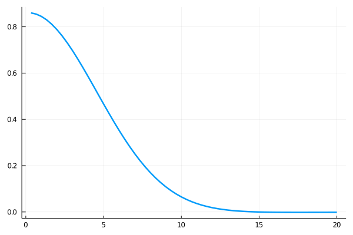
To make it even more visual, we also plot the structure of the covariance matrix as a heatmap. We see that the finite correlation length shows up as a band around the diagonal. We also see small artifacts in the antidiagonal corners. They come from the assumption that the kernel is periodic.
function plot_kernel_matrix(p)
xkernel = ht * kernel_model(p) ./ _GP_DIM
res = reduce(hcat, [circshift(xkernel, i) for i in _GP_DIM-1:-1:0])'
heatmap!(res)
end
plot()
plot_kernel_matrix(starting_point)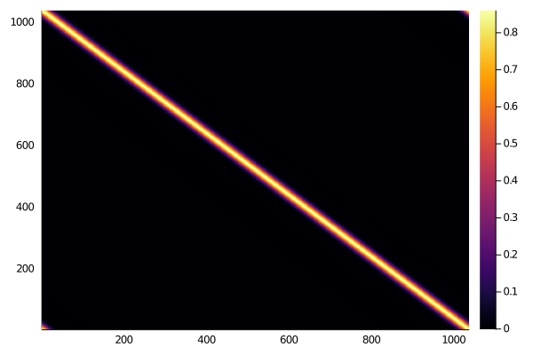
After we defined the square root of the kernel function (kernel_model), we just follow the regular procedure of sampling from the normal distribution. Since the covariance matrix in the Fourier space is diagonal, Gaussian variables in each bin are independent of each other. Thus, sampling ends up rescaling the gp_latent part of the prior vector responsible for the Gaussian process state.
After we produced a sample of Gaussian random values following the kernel model, we apply Fourier transform to return back to the coordinate space.
function gp_sample(p)
flat_gp = kernel_model(p) .* p[PARIDX.gp_latent]
(ht * flat_gp) ./ _GP_DIM
end;
nothing #hideTogether with the implementation of gp_sample we also need it's version for the Duals. It is a little patch that makes application of the Hartley transform differentiatiable.
function gp_sample(dp::Vector{ForwardDiff.Dual{T, V, N}}) where {T,V,N}
flat_gp_duals = kernel_model(dp) .* dp[PARIDX.gp_latent]
val_res = ht*ForwardDiff.value.(flat_gp_duals) ./ _GP_DIM
psize = size(ForwardDiff.partials(flat_gp_duals[1]), 1)
ps = x -> ForwardDiff.partials.(flat_gp_duals, x)
val_ps = map((x -> ht*ps(x) ./ _GP_DIM), 1:psize)
ForwardDiff.Dual{T}.(val_res, val_ps...)
end;
nothing #hideGaussian process realization is meant to serve as a Poisson rate of the Poisson process. Since the Gaussian process is not restricted to positive values, we exponentiate its values to forcefully make the function positive.
function poisson_gp_link(fs)
exp.(fs)
end;
nothing #hideNow when we have a function representing the Poisson rate density, we have to integrate it over each data bin to define the Poisson rate in these bins. Function agg_lambdas does precisely that. When GP_GRAIN_FACTOR = 1, this function just multiplies the value of the Gaussian process in the bin by the _GP_BINSIZE. When we have more GP bins per data bin (GP_GRAIN_FACTOR > 1), then we apply rectangular quadrature to integrate over the bin.
function _forward_agg(data, idxs, steps_forward)
[sum(data[i:i+steps_forward-1]) for i in idxs]
end;
function agg_lambdas(lambdas)
gps = _forward_agg(lambdas, _DATA_IDXS, GP_GRAIN_FACTOR) .* _GP_BINSIZE
xs = _GP_XS[_DATA_IDXS .+ (GP_GRAIN_FACTOR ÷ 2)]
xs, gps
end;
nothing #hideFinally, we arrive to the model definition assembled from the building blocks we defined above:
gp_samplesample from the Gaussian process with definedkernel_modelcovariancepoisson_gp_linkensures Gaussian process is positiveagg_lambdasintegrates Gaussian process over each data bin to turn it into Poisson rate for each binmodelmaps parameters into the product of the Poisson distributions counting events in each bin.
function model(params)
fs = gp_sample(params)
fine_lambdas = poisson_gp_link(fs)
_, lambdas = agg_lambdas(fine_lambdas)
Product(Poisson.(lambdas))
end;
nothing #hideVisualization utilities
function agg_full_lambdas(lambdas)
left_idxs = 1:GP_GRAIN_FACTOR:(_DATA_IDXS[1]-GP_GRAIN_FACTOR)
left_gp = _forward_agg(lambdas, left_idxs, GP_GRAIN_FACTOR) .* _GP_BINSIZE
left_xs = _GP_XS[left_idxs .+ (GP_GRAIN_FACTOR ÷ 2)]
right_idxs = (_DATA_IDXS[end]+1):GP_GRAIN_FACTOR:(size(lambdas, 1) - GP_GRAIN_FACTOR)
right_gp = _forward_agg(lambdas, right_idxs, GP_GRAIN_FACTOR) .* _GP_BINSIZE
right_xs = _GP_XS[right_idxs .+ (GP_GRAIN_FACTOR ÷ 2)]
middle_xs, middle_gp = agg_lambdas(lambdas)
full_xs = [left_xs; middle_xs; right_xs]
full_gp = [left_gp; middle_gp; right_gp]
full_xs, full_gp
end;
function _mean(p; full=false)
agg_func = if (!full) agg_lambdas else agg_full_lambdas end
xs, gps = agg_func(poisson_gp_link(gp_sample(p)))
xs, gps
end;
function plot_mean(p, label="mean"; plot_args=(;), full=false)
plot!(_mean(p; full=full)..., label=label, linewidth=2; plot_args...)
end;
function plot_prior_samples(num_samples)
for _ in 1:num_samples
p = randn(last(PARIDX).stop)
plot_mean(p, nothing)
end
end;
function plot_kernel_prior_samples(num_samples, width)
for _ in 1:num_samples
p = randn(last(PARIDX).stop)
plot_kernel_model(p, width)
end
plot!()
end;
function plot_data(; scatter_args=(;), smooth_args=(;))
scatter!(_GP_XS[_DATA_IDXS .+ (GP_GRAIN_FACTOR ÷ 2)], data, la=0, markersize=2., markerstrokewidth=0, label="data"; scatter_args...)
smooth_step = 4
smooth_xs = _GP_XS[_DATA_IDXS .+ (GP_GRAIN_FACTOR ÷ 2)][(smooth_step+1):(end-smooth_step)]
smooth_data = [sum(data[i-smooth_step:i+smooth_step])/(2*smooth_step+1) for i in (smooth_step+1):(size(data, 1)-smooth_step)]
plot!(smooth_xs, smooth_data, linewidth=2, linealpha=1, ls=:dash, label="smooth data"; smooth_args...)
end;
function plot_mgvi_samples(params)
for sample in eachcol(params.samples)
if any(isnan.(sample))
print("nan found in samples", "\n")
continue
end
plot!(_mean(Vector(sample))..., linealpha=0.5, linewidth=1, label=nothing)
end
plot!()
end;
function plot_kernel_mgvi_samples(params, width)
for sample in eachcol(params.samples)
if any(isnan.(sample))
print("nan found in samples", "\n")
continue
end
plot_kernel_model(sample, width; plot_args=(linealpha=0.5, linewidth=1, label=nothing))
end
plot!()
end;
function produce_posterior_samples(p, num_residuals)
batch_size = 10
if num_residuals <= 2*batch_size
batch_size = num_residuals ÷ 2
end
est_res_sampler = MGVI._create_residual_sampler(model, p;
residual_sampler=ImplicitResidualSampler,
jacobian_func=FwdRevADJacobianFunc,
residual_sampler_options=(;cg_params=(;abstol=1E-2)))
batches = []
for _ in 1:(num_residuals ÷ batch_size ÷ 2)
batch_residual_samples = MGVI.rand(Random.GLOBAL_RNG, est_res_sampler, batch_size)
push!(batches, p .+ batch_residual_samples)
push!(batches, p .- batch_residual_samples)
end
reduce(hcat, batches)
end
function _extract_quantile(sorted_gp_realizations, p)
map(s -> quantile(s, p; sorted=true), eachrow(sorted_gp_realizations))
end;
function plot_posterior_bands(p, num_samples; full=false)
bands = [(0.997, :red), (0.955, :goldenrod1), (0.683, :green)]
samples = produce_posterior_samples(p, num_samples)
xs, first_gp = _mean(samples[1:end, 1]; full=full)
gp_realizations = reduce(hcat, [_mean(Vector(sample); full=full)[2] for sample in eachcol(samples[1:end, 2:end])]; init=first_gp)
for (i, one_x_sample) in enumerate(eachrow(gp_realizations))
gp_realizations[i, 1:end] .= sort(Vector(one_x_sample))
end
for (band, color) in bands
quant_l = _extract_quantile(gp_realizations, (1-band)/2)
quant_u = _extract_quantile(gp_realizations, (1+band)/2)
plot!(xs, quant_l; fillrange=quant_u, fillcolor=color, linealpha=0, label=band)
end
sample_median = _extract_quantile(gp_realizations, 0.5)
plot!(xs, sample_median; linewidth=2, linecolor=:grey25, label="median")
end;
nothing #hideVisualization and fitting
We start by plotting the Gaussian process's dynamic range by sampling many possible realizations of it unconditionally on the data. We expect the set of lines to populate the regions where there are data.
plot()
plot_prior_samples(200)
plot_data()
plot!(ylim=[0, 8])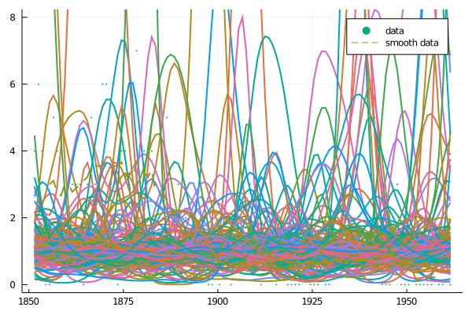
We also plot prior samples for the kernel in the coordinate space. The plot below shows that the kernel is flexible in the amplitude while the correlation length is quite strongly predefined:
plot()
plot_kernel_prior_samples(200, 20)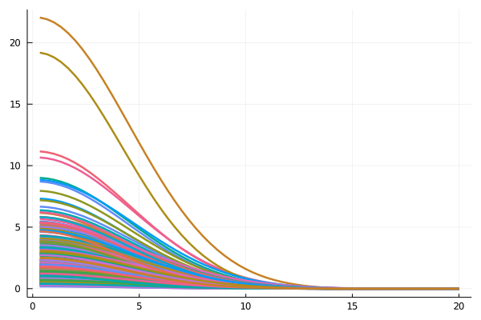
Now we see that the Gaussian process potentially is able to fit the data, we plot the initial guess (starting_point) to see where we start from. This plot shows:
- data points
- smoothed data with a moving average of 9 years
- Poisson rate for each bin
plot()
plot_mean(starting_point, "starting_point")
plot_data()We also want to introduce the full plot that shows not only the data region but includes the region with the padding we added with GP_PADDING. We will use this plot to make sure that periodic boundary conditions don't interfere with the data.
plot()
plot_mean(starting_point, "full gp"; full=true)
plot_mean(starting_point, "starting_point")
plot_data()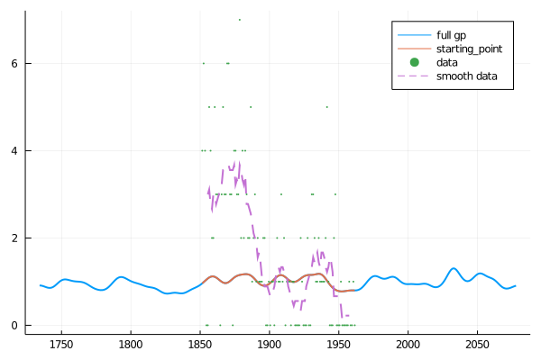
Let's make a first iteration of the MGVI. We limited Optim option to 1 iteration on purpose to let MGVI coverge slowly, so that we'll see nice convergence curve.
first_iteration = mgvi_kl_optimize_step(Random.GLOBAL_RNG,
model, data,
starting_point;
num_residuals=3,
jacobian_func=FwdRevADJacobianFunc,
residual_sampler=ImplicitResidualSampler,
optim_options=Optim.Options(iterations=1, show_trace=false),
residual_sampler_options=(;cg_params=(;abstol=1E-2,verbose=false)));
nothing #hideWe again plot data and the Poisson rate. Then we again show the Gaussian process with padding. After one iteration the Poisson rate doesn't seem to get much closer to the data.
plot()
plot_mean(first_iteration.result, "first_iteration")
plot_data()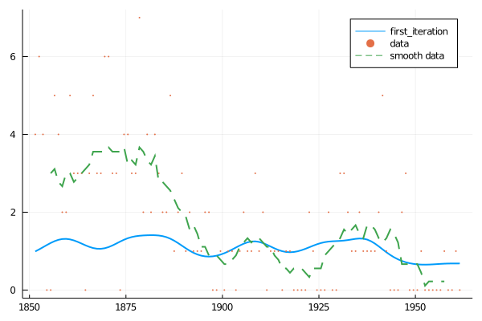
plot()
plot_data()
plot_mean(first_iteration.result, "full gp"; full=true)
plot_mean(first_iteration.result, "first_iteration")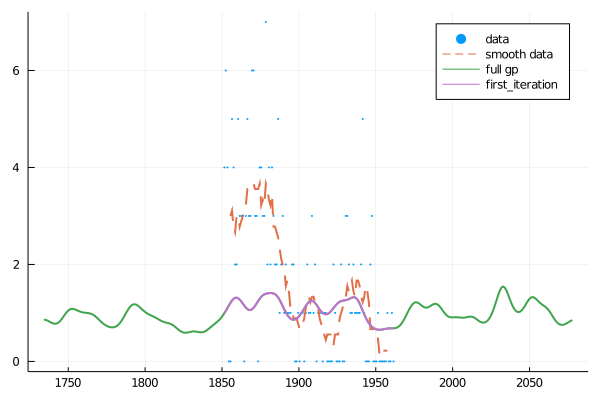
We also would like to have a look at the kernel. Below we plot it together with the MGVI samples that represent the possible variation of the kernel shape around the mean:
plot()
plot_kernel_model(first_iteration.result, 20; plot_args=(;label="kernel model"))
plot_kernel_mgvi_samples(first_iteration, 20)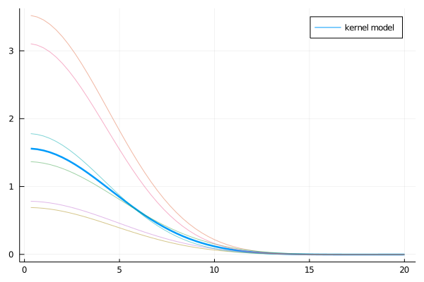
In order to visualize convergence we prepare few functions to compute average posterior likelihood, store it and plot it.
function compute_avg_likelihood(model, samples, data)
tot = 0
for sample in eachcol(samples)
tot += -MGVI.posterior_loglike(model, sample, data)
end
tot/size(samples, 2)
end;
function show_avg_likelihood(series)
scatter!(1:size(series, 1), series, label="-loglike")
end;
nothing #hideNow we do 30 more iterations of the MGVI and store the average likelihood after each step. We feed the fitted result of the previous step as an input to the next iteration.
next_iteration = first_iteration;
avg_likelihood_series = [];
push!(avg_likelihood_series, compute_avg_likelihood(model, next_iteration.samples, data));
for i in 1:30
tmp_iteration = mgvi_kl_optimize_step(Random.GLOBAL_RNG,
model, data,
next_iteration.result;
num_residuals=8,
jacobian_func=FwdRevADJacobianFunc,
residual_sampler=ImplicitResidualSampler,
optim_options=Optim.Options(iterations=1, show_trace=false),
residual_sampler_options=(;cg_params=(;abstol=1E-2,verbose=false)))
global next_iteration = tmp_iteration
push!(avg_likelihood_series, compute_avg_likelihood(model, next_iteration.samples, data))
end;
nothing #hideFirstly, let's have a look at the convergence plots. We see that MGVI converged after 10 iterations while being limited to very poor Optim performance.
plot(yscale=:log)
show_avg_likelihood(avg_likelihood_series)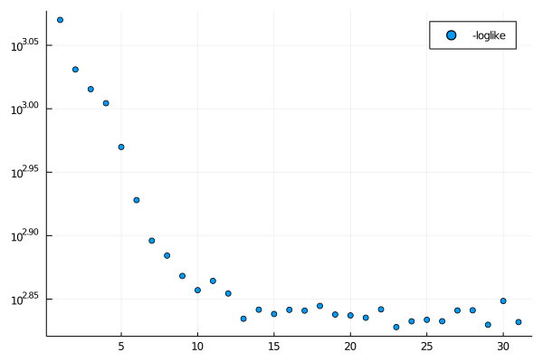
Below we plot the result of the fit. Together with data and Poisson rate we also plot MGVI residuals. They are samples from the Gaussian posterior, sampled respecting the posterior covariance structure. Thus MGVI residual samples are deviations from the MGVI fit that represent how confident we are about the prediction.
plot(ylim=[0,8])
plot_mgvi_samples(next_iteration)
plot_mean(next_iteration.result, "many_iterations", plot_args=(color=:deepskyblue2, linewidth=3.5))
plot_data(scatter_args=(;color=:blue2, marker_size=3.5), smooth_args=(;color=:deeppink3, linewidth=3))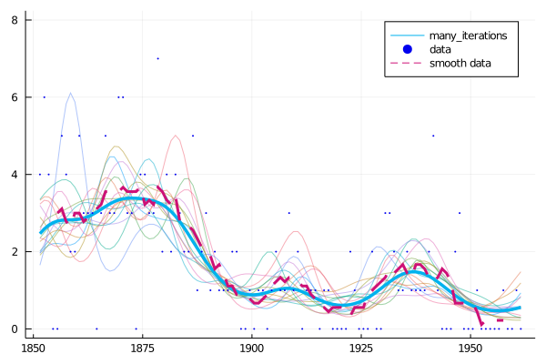
To present credibility intervals we also plot credibility bands. We sample 400 residual samples from MGVI and then plot quantiles for each data bin. This should give us a feeling of how the MGVI fit is compatible with the data.
plot(ylim=[0,8])
plot_posterior_bands(next_iteration.result, 400)
plot_mean(next_iteration.result, "many_iterations", plot_args=(color=:deepskyblue2, linewidth=3.5))
plot_data(scatter_args=(;color=:blue2, marker_size=3.5), smooth_args=(;color=:deeppink3, linewidth=3))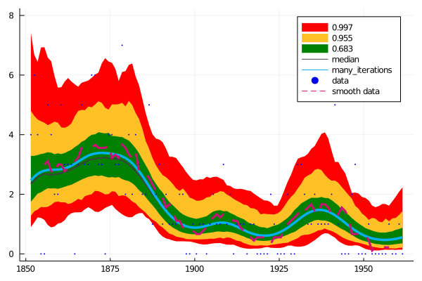
We also make sure boundary conditions do not interfere with the data. Here is the Gaussian process plot with the paddings included:
plot()
plot_data()
plot_mean(next_iteration.result; full=true)
plot_mean(next_iteration.result, "many_iterations")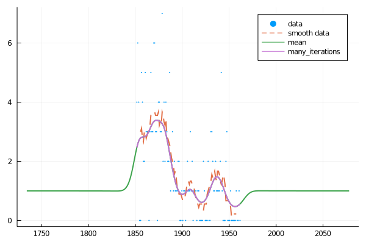
Let's have a look at the kernel again. We expect the variation of samples to become narrower:
plot()
plot_kernel_model(next_iteration.result, 20; plot_args=(;label="kernel model"))
plot_kernel_mgvi_samples(next_iteration, 20)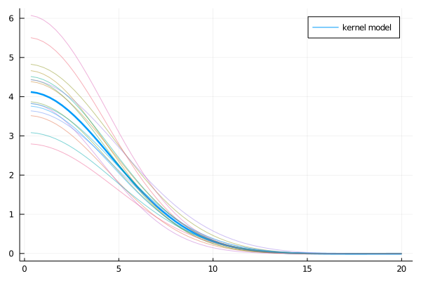
Maximum A-Posteriori estimation
We build a MAP as a cross check of MGVI results. We just optimize posterior likelihood with Optim without any particular tuning:
max_posterior = Optim.optimize(x -> -MGVI.posterior_loglike(model, x, data), starting_point, LBFGS(), Optim.Options(show_trace=false, g_tol=1E-10, iterations=300));
nothing #hideWe observe that the bump in the middle (around 1910) is caught by MAP while it is less pronounced in the MGVI fit. MAP also has finer structure around 1875 and 1835.
plot()
plot_mean(Optim.minimizer(max_posterior), "map")
plot_mean(next_iteration.result, "mgvi mean")
plot_data()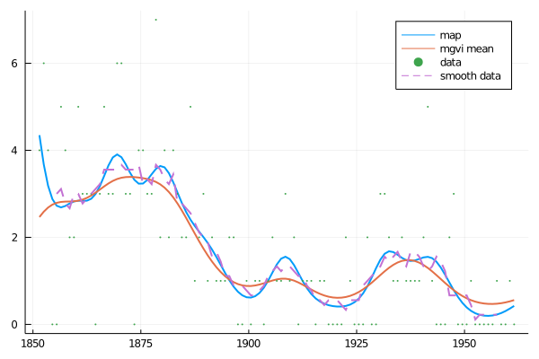
We also can see the difference at the left edge of the data region. While MGVI smoothed the data, MAP predicted a consequent peak:
plot()
plot_data()
plot_mean(Optim.minimizer(max_posterior), "full gp"; full=true)
plot_mean(next_iteration.result, "mgvi full gp"; full=true)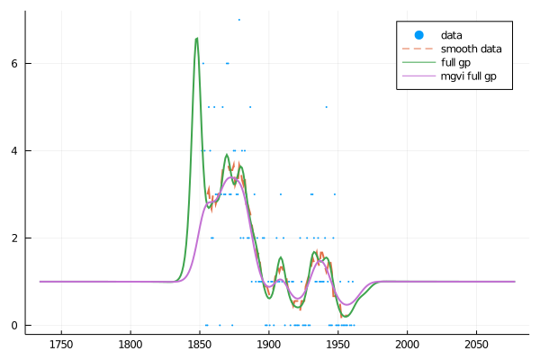
This page was generated using Literate.jl.